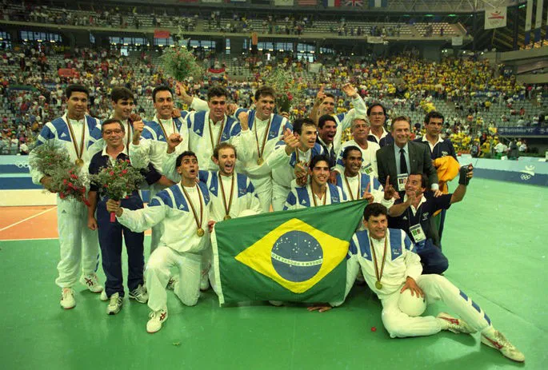

HISTÓRIA DO VÔLEI
O voleibol foi criado em 1895 por William G. Morgan, diretor de educação física da Associação Cristã de Moços (ACM) em Massachusetts, nos Estados Unidos. O objetivo de Morgan era inventar um jogo recreativo e sem contato físico direto, servindo como uma alternativa de menor impacto ao basquete, que havia sido criado pouco tempo antes. O esporte foi inicialmente batizado de Mintonette, mas logo teve seu nome alterado para voleibol devido à natureza do jogo, que consistia em rebater a bola no ar de um lado para o outro por cima de uma rede.
VÔLEI NO BRASIL

(Primeira medalha de ouro conquistada pela seleção brasileira em 1992, em Barcelona)
PRINCIPAIS PREMIAÇÕES BRASILEIRAS
QUADRA
Jogos Olímpicos: 3 medalhas de ouro (1992, 2004 e 2016) e 3 de prata.
Mundial: 3 medalhas de ouro consecutivas (2002, 2006 e 2010) e outras 4 medalhas (pratas e bronzes).
Liga Mundial (extinta): 9 medalhas de ouro (recorde absoluto da competição).
Copa do Mundo: 3 medalhas de ouro.
Campeonato Sul-Americano: Hegemonia histórica absoluta, tendo vencido quase todas as edições já disputadas do torneio.
AREIA
Jogos Olímpicos (Total): 14 medalhas, tornando o Brasil o país com o maior número de pódios na história olímpica da modalidade.
Jogos Olímpicos (Ouros): 4 medalhas de ouro, sendo duas na categoria feminina (1996 e 2024) e duas na masculina (2004 e 2016).
Campeonato Mundial: É o maior vencedor da história da competição, liderando com folga o quadro geral de medalhas e títulos tanto entre os homens quanto entre as mulheres.